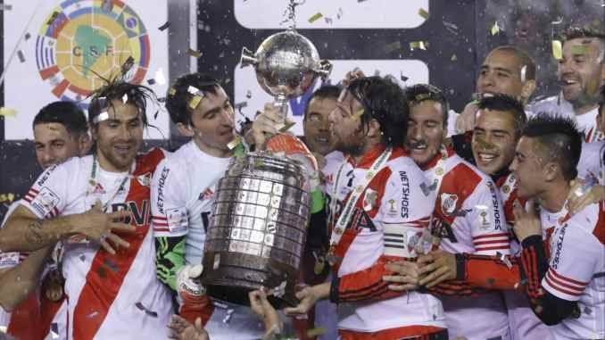

Estadio Monumental
Capacidad: 83,214 espectadores
Inauguración: 25 de mayo de 1938
Títulos totales: 70 títulos oficiales.
Títulos nacionales: 38 títulos (38 Ligas Argentinas, 1 Copa Argentina, 1 Supercopa Argentina).
Títulos internacionales: 18 títulos (4 Copa Libertadores, 1 Intercontinental, 3 Recopas Sudamericanas, entre otros).
Copa Libertadores 1986
Copa Libertadores 1996

Copa Libertadores 2015
Copa Libertadores 2018
Cantidad de hinchas: Más de 15 millones de hinchas.
Cantidad de socios: Más de 250.000 socios activos (2023).
Rival: Boca Juniors, en el superclásico del fútbol argentino.


Capacidad: 83,214 espectadores
Inauguración: 25 de mayo de 1938